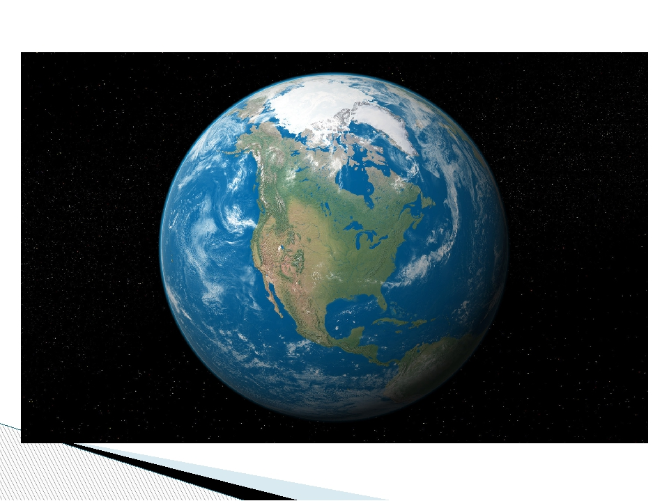

Земля — единственная известная в настоящий момент планета, на которой есть жизнь. Её природные особенности являются предметом многих научных исследований. Это третья по счёту от Солнца планета Солнечной системы и крупнейшая по диаметру, массе и плотности среди планет земной группы. Основные климатические особенности Земли заключаются в наличии двух больших полярных регионов, двух относительно узких умеренных зон и одного широкого экваториально-тропического региона[3]. Количество осадков на планете варьируется в широких пределах в зависимости от местоположения и колеблется от миллиметра до нескольких метров осадков в год. Около 71 % поверхности Земли занимает океан. Остальная часть состоит из континентов и островов, причём большая часть суши, населённой людьми, находится в северном полушарии.

Эволюция Земли происходила посредством геологических и биологических процессов, которые оставили следы первоначальных условий. Поверхность планеты разделена на несколько непрерывно движущихся литосферных плит, что приводит к периодическому слиянию и разъединению континентов. Внутренняя часть Земли состоит из толстого слоя расплавленной мантии и железного ядра, генерирующего магнитное поле.
Состав текущей атмосферы был существенно изменён по сравнению с первоначальной посредством жизнедеятельности различных форм жизни[4], которые создают экологическое равновесие, стабилизирующее условия на поверхности. Несмотря на значительные различия в климате в зависимости от широты и других географических факторов, средний глобальный климат достаточно стабилен во время межледниковых периодов[5], а изменение на 1—2 °C средней глобальной температуры исторически имело серьёзное влияние на экологический баланс и географию Земли[
Геология
Геология — комплекс наук о составе, строении земной коры и размещённых в ней полезных ископаемых. Комплекс наук в составе геологии занимается изучением состава, структуры, физических свойств, динамики и истории земных материалов, а также процессов, посредством которых они образуются, перемещаются и изменяются. Геология — одна из основных академических дисциплин, которая, помимо прочего, имеет важное значение для добычи минерального и углеводородного сырья, прогнозирования и смягчения последствий стихийных бедствий, расчётов в геотехнических областях[en] и изучения климата и окружающей среды в прошлом.
История
Солнечная система образовалась из межзвёздного газопылевого облака, в котором благодаря гравитационному сжатию возникла центральная звезда — Солнце — и окружающий его протопланетный диск. В этом диске 4,54 млрд лет назад сформировалась Земля наряду с другими планетами[8]. Не позже, чем через несколько десятков миллионов лет с Землёй столкнулась планета размером с Марс, и из выбросов от этого удара образовалась Луна. Расплавленный наружный слой Земли со временем охлаждался, формируя твёрдую оболочку — кору. Выделение газов и вулканическая активность привели к возникновению первичной атмосферы. Конденсация водяного пара (большинство которого образовалось изо льда комет) привела к возникновению океанов и других водоёмов[9]. После этого, около 4 млрд лет назад, высокоэнергетические химические процессы привели к возникновению самовоспроизводящейся молекулы[10].
Поверхность Земли на протяжении сотен миллионов лет менялась, время от времени образуя суперконтинент , который затем снова распадался на отдельные континенты. Примерно 750 млн лет назад начал разделяться самый древний из известных суперконтинентов — Родиния. Через некоторое время континенты снова соединились и сформировали Паннотию, которая разъединилась около 540 млн лет назад. Затем образовался последний суперконтинент — Пангея, который разделился около 180 млн лет назад[11].